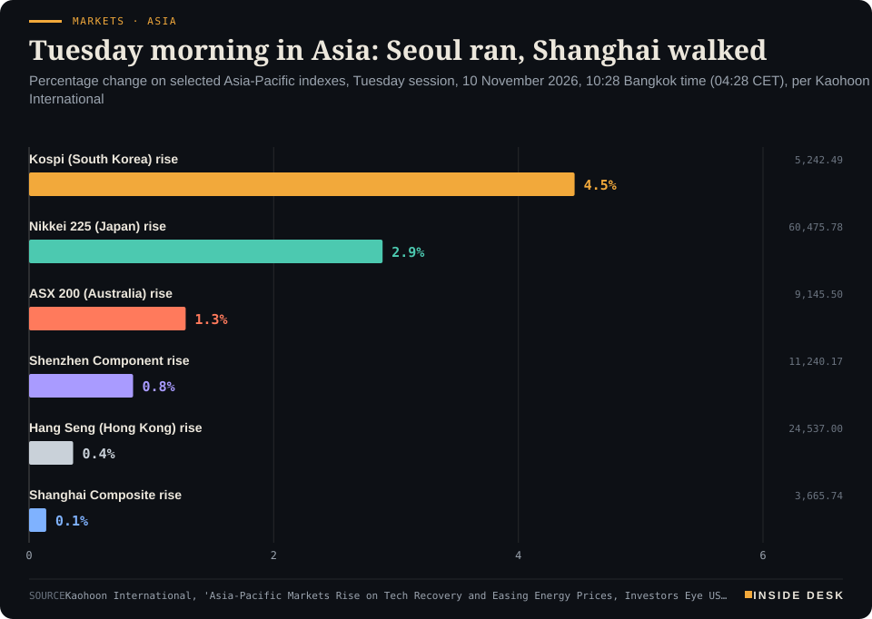
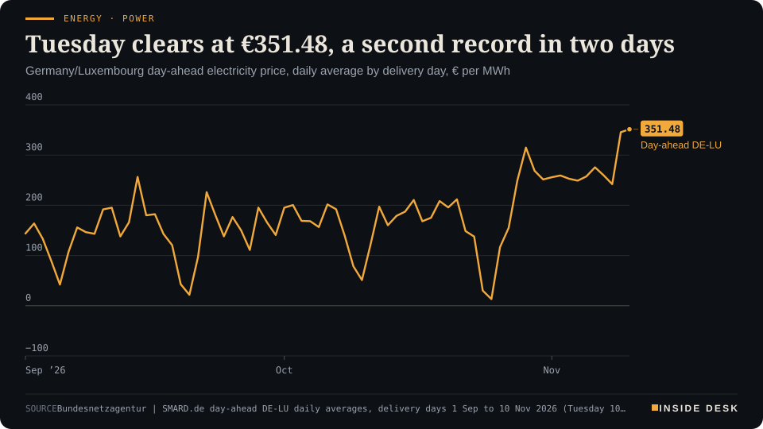

Inside Desk ePaper, Morning ePaper · Tue 10 Nov 2026
Tuesday, 10 November 2026Always free
Inside Desk
Morning ePaperAvailable 06:30 CET · Berlin
Lead · Money, FX & Committees
A shutdown a year ago left a hole in October 2025. At 14:30 CET the statisticians publish the month they can measure, not the year they cannot.
US consumer prices arrive at 14:30 CET without their usual annual figure, and that honesty is the point. Elsewhere: €351.48 for Tuesday's power, 325 Hormuz transits in a week, the budget's last 48 hours and a Shigella vaccine that passed a real test.
A vaccine passed its next gate, a lake rose twenty feet and fifty-three frogs went home: slow, careful work keeps paying off, usually without a sound.
Geo-economics · p. 5
Markets & Macro · p. 6
Energy & Industry · p. 10
Climate & Weather · p. 16
The day in one sentenceA vaccine passed its next gate, a lake rose twenty feet and fifty-three frogs went home: slow, careful work keeps paying off, usually without a sound.
ContentsInside Desk · Morning ePaper10 November 2026
US consumer prices arrive at 14:30 CET without their usual annual figure, and that honesty is the point. Elsewhere: €351.48 for Tuesday's power, 325 Hormuz transits in a week, the budget's last 48 hours and a Shigella vaccine that passed a real test.
11 edition pieces · 11 desks · Available 06:30 CET, 10 November 2026
22 ePaper extras, added , 10 November. They appear only in the ePaper and carry their own time.
17:30 Evening ePaper, updated live until 22:30 with an “Updated” time and a Latest page
Sun 10:00 The Sunday Magazine
Berlin time. Every issue is free.
How to read it
Swipe, use the arrow keys or the page strip. Tap any headline for the reading view. Press / to search, t for contents, +/− to zoom. Download the PDF.
LeadInside Desk · Morning ePaper10 November 2026
Money, FX & Committees · Lead · 3 min
A shutdown a year ago left a hole in October 2025. At 14:30 CET the statisticians publish the month they can measure, not the year they cannot.
At 08:30 in Washington, 14:30 in Berlin, the US Bureau of Labor Statistics publishes the consumer price index for October, together with real earnings for the same month1. Everyone has a number ready for it. What almost nobody has is the number people usually quote first: the change on a year earlier. This month it will not be there.
The reason is a year old. During the government shutdown in October 2025, the bureau did not collect prices, so there is no October 2025 index to compare against, and the BLS “can’t calculate and will not release” the year-on-year rate this month, Kiplinger reports2. Wells Fargo’s economists put it plainly: the missing annual rate “will put an even bigger spotlight on the month-over-month changes”2.
That is the dull machinery at its best. A statistics office could have patched the gap with an estimate and printed a tidy headline. It is choosing to publish what it measured and to say what it did not. You may find that annoying at 14:31. You should find it reassuring by 14:35.
What the forecasters have pencilled in. Economists in a Dow Jones survey expect headline prices to have risen 0.3% in October and core prices, without food and energy, 0.2%, after 0.6% and 0.3% in September3. Kiplinger quotes the Bloomberg consensus for the headline at 0.29%2. The individual calls are close together but not identical: Wells Fargo estimates 0.28% headline and 0.21% core; UBS 0.26% and 0.23%; Barclays 0.2% for both; RBC 0.3% for both2. The common thread is petrol. UBS expects energy goods to add only 0.04 percentage points to the October figure, after 0.39 points in September2.
Desk arithmetic: a 0.3% rise, if it repeated for twelve months, would compound to about 3.7% a year; a 0.2% rise to about 2.4%. That is not a forecast, only a way to translate a monthly figure into the unit you are used to.
The annual number, by other means. Some forecasters have built their own bridge over the hole. BMO’s Sal Gautieri writes that, using the average of the September and November 2025 indexes, the yearly increase would rise to 3.9% from September’s 3.7%, and core to 2.7% from 2.6%2. Treat that as what it is: one bank’s workaround, clearly labelled, not the official rate. UBS adds a warning for the months ahead: because of how the BLS handled last year’s shutdown, 12-month changes in housing rents carry an upward bias between October and March2. A thermometer with a known error is still a thermometer, as long as you know the error.
LeadInside Desk · Morning ePaper10 November 2026
Who is reading it. The Federal Reserve raised rates in mid-September for the first time in three years, then paused in late October, saying inflation “remains elevated”2. Its next decision is due on Wednesday 9 December2. Barclays, Wells Fargo and BMO all say they expect another rise in December, and Barclays reads October’s statement and its two dissents as setting one up2. That is their view, and a single calm month will not settle it: BMO’s Gautieri writes that the committee “won’t take much comfort from just one calm CPI report”2.
Tokyo is reading too. The Bank of Japan’s summary of its 29–30 October meeting, released this morning, quoted one of the nine board members saying the bank “should decide on the next policy interest rate hike when it is possible without becoming overly cautious”; Bloomberg reads the summary as a good chance of a December move5.
Your money this morning. Markets have spent the night in a better mood. Brent was 0.9% lower at $91.74 a barrel early on Tuesday4, after settling at $92.57 on Monday3. The euro was at $1.1222, down from $1.1266, and the dollar at 158.06 yen4. Gold futures were 0.22% higher at $4,123.50 an ounce3. None of these prices knows what 14:30 will say.
What to do with it. If you hold dollars, a dollar mortgage, or simply a view, read the monthly figures first, then the core, then the energy line. Ignore any headline that quotes an annual rate for October as if the bureau had published one; it will not have2. Producer prices for October follow on Friday at the same hour1.
The quiet virtue here is not in any forecast. It is in a calendar kept, a release published on time, and a gap admitted rather than plastered over. Nothing here is investment advice.
Geo-economicsInside Desk · Morning ePaper10 November 2026
Geo-economics · 2 min
Washington says it will hold off on new strikes against Iran but keep the blockade. The shipping logs say the strait is running at about a third of normal.
The UK Maritime Trade Operations centre counted 170 outbound and 155 inbound transits through the Strait of Hormuz in its latest weekly report, Gulf News reports, about 65 percent below pre-conflict levels1. Desk arithmetic: 325 crossings in a week. Most ships with transponders switched on use the northern route along the Iranian coast1. UKMTO’s own summary: “well below normal but not stalled”1.
Three counters, three answers. The Joint Maritime Information Center sees single-digit to low double-digit daily transits on independent tracking; US naval coordination data recorded about 30 US-facilitated transits a day from 5 to 7 November, which UKMTO says it cannot independently verify1. Many ships switch off their transponders, so traffic is likely undercounted1. The disagreement is not a scandal; it is method, and it is worth knowing which number a headline uses.
The damage ledger. At least 11 ships were attacked in and around the strait in the week to 6 November, and three sank1. UKMTO has recorded 88 projectile strikes since hostilities resumed in early July and says most attacks go unreported; the JMIC counts 177 incidents since 1 March and keeps its threat level at “severe”1. On Monday UKMTO logged another tanker “attacked” off Khasab, Oman, with its crew evacuated1. US Central Command says its blockade has redirected 147 vessels since July and disabled five that refused to comply1.
The politics. President Trump said on Monday he plans to hold off on new military strikes against Iran for the time being, after appeals from countries in the region, and to keep the naval blockade in place for now2. Markets took that as relief; the shipping data has not yet had a week to show whether it means anything at sea2,1.
For you, the strait arrives as freight rates, insurance premiums and, months later, prices on shelves. The useful habit is to watch the weekly counts, not the speeches.
Geo-economics · Short item · ePaper extra, added
Foreign ministers restated the old line on force and the newer one on export restrictions. Europe's seat at the Ukraine table remained the open question.
The Group of Seven foreign ministers opened their fourth in-person meeting of the year in Paris on Monday, NHK reports1. They reaffirmed their opposition to unilateral attempts to change the status quo by force or coercion in the East and South China Seas and the Taiwan Strait1.
The economic line is the one to keep. Ministers agreed to cooperate in countering market-distorting policies and practices, arbitrary export restrictions and economic coercion1. They also agreed to work together against cybercrime such as cryptocurrency theft, and restated the commitment to North Korea’s complete denuclearisation under UN Security Council resolutions1.
None of this is new in wording. …
Geo-economics · Brief · ePaper extra, added
OPEC crude output rose by 1.38 million barrels a day in October to 22.87 million, a Reuters survey found, led by Saudi Arabia, Kuwait and Iraq; that is about 90 percent of the 25.48 million pumped in February, before the war, OilPrice.com reports1. A Bloomberg survey put October at 22.8 million1. Iran’s output fell to 1.9 million barrels a day, the lowest in that survey’s data back to 19891.
On the same day, Saudi Arabia’s East-West pipeline, its main route around the Strait of Hormuz to the Red Sea port of Yanbu, was targeted in the Medina region; an Energy Ministry official said a limited fire was put out with no casualties and no disruption to operations1. OPEC+ ministers meet on 29 November to set 2027 targets1. Nothing here is investment advice.
Markets & MacroInside Desk · Morning ePaper10 November 2026
Markets & Macro · Podium vs Print · 2 min
A president told a television channel that new strikes on Iran were unlikely if talks progress. By Tuesday morning the barrel and the Asian screens had given their answer, and the secretary of state had added a footnote.
Podium
“A resumption of strikes on Iran is "highly unlikely" if the United States sees progress in negotiations toward ending the war (as reported by AP; quotation marks around his words only)”
Donald Trump, President of the United States, speaking to CNN, Over the weekend of 7–8 November 2026, as reported by AP on Tuesday 10 November
Print$91.74 a barrel
Down 0.9% early on Tuesday, after settling at $92.57 on Monday, down $5.75 or 5.85%.
Brent crude, the international benchmark, as reported by AP, Early Tuesday 10 November 2026, Asian trading
The podium. Over the weekend Donald Trump told CNN that a resumption of strikes on Iran is “highly unlikely” if the United States sees progress in negotiations toward ending the war, AP reports1. It was a conditional sentence, and the condition matters: “if” carries most of its weight.
The print. The oil market took the sentence at face value first and read the condition later. Brent settled at $92.57 on Monday, down $5.75 or 5.85%, and US crude at $86.85, down 4.38%2. Early on Tuesday Brent slipped another 0.9% to $91.74 and US crude 1% to $85.971. Asia followed Wall Street higher. At 04:28 CET, Kaohoon International had Seoul’s Kospi up 4.46%, Tokyo’s Nikkei up 2.89% at 60,475.78 and Shanghai up only 0.14%2.
Markets · AsiaTuesday morning in Asia: Seoul ran, Shanghai walkedPercentage change on selected Asia-Pacific indexes, Tuesday session, 10 November 2026, 10:28 Bangkok time (04:28 CET), per Kaohoon International

Bar chart of Tuesday 10 November 2026 percentage changes in Asia at 04:28 CET, per Kaohoon International: Kospi up 4.46 percent to 5,242.49, Nikkei 225 up 2.89 percent to 60,475.78, ASX 200 up 1.28 percent to 9,145.50, Shenzhen Component up 0.85 percent to 11,240.17, Hang Seng up 0.36 percent to 24,537.00 and Shanghai Composite up 0.14 percent to 3,665.74. These are intraday snapshot levels, not closes.
Source: Kaohoon International, 'Asia-Pacific Markets Rise on Tech Recovery and Easing Energy Prices, Investors Eye US Inflation Data', levels at 10:28 Bangkok time (04:28 CET), 10 Nov 2026; intraday snapshot, not closing levels; retrieved 10 Nov 2026 · reported figures · CSV
The gap. The footnote came from the same government. Secretary of State Marco Rubio said on Sunday that Iranian demands had sometimes been “outrageous and ridiculous”1. So the podium spoke with two voices, and the print chose the softer one. That is not irrational: a barrel prices probabilities, and a lower chance of strikes is worth something even before any deal exists. Seoul and Tokyo were led by chipmakers and AI names1: oil was the tailwind, not the engine.
What the speech left out. The households. In the same Asian morning, Japan reported that household spending fell 6.8% on the year in September, against a 3.1% fall expected, its tenth monthly decline in a row3. Desk arithmetic: Monday’s figures imply a Friday settle of $98.32 ($92.57 + $5.75), so Tuesday’s early $91.74 is $6.58, or about 6.7%, lower. …
Markets & Macro · Short item · ePaper extra, added
When the index jumped more than 5%, the exchange paused the machines for five minutes. A small rule, doing its job.
Seoul had the loudest morning in Asia. The Kospi surged more than 5% at one point, and the Korea Exchange activated its “sidecar”, suspending programme-driven buying orders for five minutes to moderate volatility1. By 04:28 CET the index stood 4.46% higher at 5,242.491.
The engine was chips. Samsung Electronics gained 4.6% and SK Hynix 5.6%, AP reports; Taiwan’s Taiex rose 3.4%2. …
Markets & MacroInside Desk · Morning ePaper10 November 2026
Markets & Macro · Brief · ePaper extra, added
The VIX, the index of expected volatility on the S&P 500 often called Wall Street’s fear gauge, fell 22.31% on Monday to 19.921. That is the market saying it expects calmer weeks than it did on Friday; it is not a promise. Gold futures, meanwhile, added 0.22% to $4,123.50 a troy ounce on Tuesday morning1. Desk arithmetic: a fall of 22.31% to 19.92 implies the VIX stood near 25.6 before Monday. The next test of that calm is scheduled, not random: US consumer prices for October at 14:30 CET1. Nothing here is investment advice.
Politics & InstitutionsInside Desk · Morning ePaper10 November 2026
Politics & Institutions · 2 min
Before Thursday's committee session, the coalition is haggling over a plastics tax, a sugar tax, a children's top-up and an electricity tax cut. The arithmetic is less dramatic than the noise, and tighter.
The coalition has until Thursday. That is when the Bundestag’s Budget Committee begins its final “Bereinigungssitzung” on the 2027 budget, which traditionally runs into the early hours of Friday3. Bild reported a Monday-evening mediation meeting of the two parliamentary group leaders, Thorsten Frei (CDU) and Matthias Miersch (SPD), Merkur writes3; no result had been reported by the time this edition closed.
The frame. The draft plans core spending of €555.4 billion and new core borrowing of €118.7 billion; including the special funds for the armed forces and infrastructure, new borrowing reaches €203.7 billion1. The autumn tax estimate brings the federal government about €3.9 billion more, but the debt brake lets it borrow €2.5 billion less because the economic forecast improved, leaving about €1.4 billion of extra room on paper1.
The wish list. The plastics tax would raise about €670 million in 2027 and about €1.5 billion a year from 20281. “Die Plastiksteuer machen wir nicht,” Frei said on ZDF (“We won’t do the plastics tax”)1. The sugar tax, worth about €690 million next year, looks likelier to come, though parts of the Union want to delay it to 1 January 20281,2. The Union wants an electricity tax cut for everyone and a further offset of bracket creep, each costing about €5 billion, with no counter-financing1. The SPD wants to keep the €25 children’s top-up and avoid housing-benefit cuts, about €770 million together1,3. Environment Minister Carsten Schneider said the Union now has to propose “wie wir das Loch im Haushalt schließen” (“how we close the hole”)2.
The year that matters. The finance ministry’s own figures show an uncovered gap of about €25 billion in 2028, €40 billion in 2029 and €50 billion in 2030, about €115 billion in total1. Every permanent tax cut agreed this week lands in those years.
For you, the headlines will be about plastic and sugar. The line to read on Friday morning is the one that says how each new promise is paid for.
Politics & Institutions · Short item · ePaper extra, added
Hungary's prime minister is in Berlin with four ministers. Brussels has released €4.2 billion; €12.4 billion is still being checked.
Chancellor Friedrich Merz receives Hungary’s prime minister Péter Magyar at the Chancellery today: a one-to-one talk, then a working lunch with ministers from both sides on Europe, defence, economic cooperation and support for Ukraine, and a joint press conference planned for about 13:30 CET1,2. Magyar’s Tisza party won April’s election and ended 16 years of Fidesz government under Viktor Orbán; he has led a pro-European government since May1.
The delegation brings the foreign, economy and energy, defence and interior ministers; Germany remains Hungary’s main trading partner3. …
“For Europe, it is clear: we do not need to establish a new security architecture for Europe,” German Foreign Minister Johann Wadephul said on Monday, according to AFP1. He urged Moscow to “give up maximalist demands” and warned against a “negotiation show” in Abu Dhabi1. After meeting Marco Rubio at the G7 in Paris he added: “Europe belongs at this table”2.
Berlin’s leverage here is not volume but presence: officials from the UK, France, Germany and Italy, plus NATO and the EU, will hold separate talks with Ukraine’s delegation in Abu Dhabi, its chief negotiator Rustem Umerov said1. The Kremlin says the negotiations stay “trilateral”1.
Psychology & BehaviourInside Desk · Morning ePaper10 November 2026
Psychology & Behaviour · 2 min
A Syracuse study of authoritarian parenting separates differences between families from changes within one teenager. The two levels tell different stories, and the method is the point.
The Annex reads the method behind the headline. This week’s paper, in the Journal of Research on Adolescence and summarised by PsyPost, asks whether strict, punitive parenting with little warmth goes with teenagers’ beliefs that rule-breaking and aggression are acceptable, and with anxiety and depression1.
The design. Wusirige, a PhD candidate at Syracuse University, with Bo Jian and Gabriel J. Merrin, used 491 US adolescents and one parent each from the AmeriSpeak Panel, a randomly recruited survey panel1. Families answered four waves about six months apart between November 2021 and summer 2023; teenagers averaged about 15.3 years at the start, and 71.3% of responding parents were mothers1. Parents rated authoritarian practices once, at wave 1, on a 0-to-4 scale; teenagers reported anxiety, depression and agreement with statements such as “Some kids deserve to be picked on” at waves 2 to 41. Participation fell from 413 at wave 2 to 364 at wave 41.
The trick. A random-intercept cross-lagged panel model separates two questions: do teenagers from stricter homes differ on average from others (between-person), and does a given teenager rise above their own usual level (within-person)1? Headlines usually blur them.
The results. Between families, more authoritarian parenting went with modestly higher stable levels of antisocial thinking, but not with average anxiety or depression1. Within teenagers, nothing showed up at waves 2 and 3. At wave 4, about 18 months after the parenting survey, earlier authoritarian parenting was associated with rises in anxiety and depression above each teenager’s own baseline; the depression link sat right at the threshold of significance1. No differences between boys and girls were significant1.
Psychology & Behaviour · Short item · ePaper extra, added
A Helsinki study suggests ADHD symptoms track a shift towards overly synchronised brain activity. A promising frame, a small sample, and no single pattern that sorts people neatly.
The idea is called brain criticality: the brain may work best near a tipping point between activity that is too disorganised and activity that is too synchronised1. Hamed Haque of the University of Helsinki and colleagues tested whether ADHD symptoms reflect a shift towards the synchronised side, in a study published in Translational Psychiatry1.
They recorded 70 adults with magnetoencephalography, 36 neurotypical and 34 with an ADHD diagnosis, at rest and during two attention tasks; those with ADHD paused medication for 24 hours1. …
Researchers led by Kanhao Zhao and Yu Zhang of Lehigh University trained a model on resting brain scans of 129 people in Mexico, 71 with cocaine use disorder and 58 without; it told the groups apart with 83% accuracy1. On an independent group of 82 patients and 81 controls from the US and Mexico, accuracy fell to 70%, but the same connectivity differences reappeared1. In a small trial of 45 patients, 25 given active magnetic stimulation (rTMS) and 20 a sham, the signature predicted craving reductions only in the active group1. The study is in Nature Mental Health1.
The drop from 83% to 70% is the honest number: that is what replication looks like. The samples were mostly male, the sites varied, and the design cannot say whether the pattern causes the disorder or follows from it1. A screening tool is a hope for later, not a test you can book1.
Energy & IndustryInside Desk · Morning ePaper10 November 2026
Energy & Industry · 2 min
Monday's auction for Tuesday delivery cleared a few euros above Monday's record. The wind came back a little; not nearly enough to matter.
The day-ahead auction for Tuesday 10 November cleared at a German-Luxembourg daily average of €351.48 per megawatt hour, the SMARD series shows1. That is €5.84 above Monday’s €345.64, which had itself been the dearest delivery day of 2026, so the year.s record has been broken on two consecutive delivery days (Desk arithmetic)1. On 10 November 2025 the same series stood at €109.89; Tuesday’s price is about 3.2 times that (Desk arithmetic)1.
Energy · PowerTuesday clears at €351.48, a second record in two daysGermany/Luxembourg day-ahead electricity price, daily average by delivery day, € per MWh

Line chart of the daily average German-Luxembourg day-ahead electricity price from 1 September to 10 November 2026, in euros per megawatt hour. It falls to €13.12 on Sunday 25 October during the storm, climbs to €314.85 on Thursday 29 October, and stays between €242.13 and €275.64 on every delivery day from 2 to 8 November. It jumps to €345.64 on Monday 9 November. The latest value is €351.48 for delivery on Tuesday 10 November, the highest daily average of 2026 on the SMARD series, €5.84 above Monday and about three times the €109.89 of 10 November 2025.
Source: Bundesnetzagentur | SMARD.de day-ahead DE-LU daily averages, delivery days 1 Sep to 10 Nov 2026 (Tuesday 10 Nov €351.48, auction of 9 Nov), retrieved 10 Nov 2026 · CC BY 4.0 · CSV
The shape moved. Monday’s pain sat in the evening, with €644.18 at 17:00. Tuesday’s dearest hour is 08:00 at €494.05, about €150 lower than Monday’s peak (Desk arithmetic)1. The breakfast block is the expensive one now: Desk arithmetic: the four hours from 07:00 to 11:00 average €461.00. A second hump follows in the late afternoon, €483.35 at 16:001. The gap between the dearest and the cheapest hour is €274.39, against €420.91 on Monday (Desk arithmetic)1.
Energy & Industry · Short item · ePaper extra, added
Oil slipped again overnight after Washington said it would hold off on new strikes against Iran. The blockade and the attacks on shipping have not gone away.
Brent crude futures fell 70 cents, or 0.75 percent, to $91.88 a barrel by 03:46 CET on Tuesday, Reuters reported; US crude (WTI) lost 78 cents to $86.071. Both had been down about 1 percent earlier in the Asian session, with Brent quoted at $91.56 at one point1,2. This follows Monday’s 5.85 percent fall to the lowest settlement since 31 August1.
The trigger is a sentence, not a barrel. President Trump said he plans to hold off on new military strikes against Iran “at this point”, after appeals from countries in the region, while keeping the naval blockade in the Strait of Hormuz in place for now1. …
Energy & Industry · Brief · ePaper extra, added
Russian forces targeted four electrical substations in the Kyiv, Dnipropetrovsk, Cherkasy and Vinnytsia regions, Russia’s defence ministry said on Monday1. The Guardian describes the strikes as part of a campaign to deny Ukrainian civilians heating, light and running water as winter approaches1.
The answer came in the dull language of administration. President Zelenskyy said the EU had agreed to activate a special emergency mechanism that speeds up funding for power-grid repairs1. Transformers, cables and crews are bought with invoices, and invoices need a budget line that clears quickly. That is what a mechanism is for.
Money, FX & CommitteesInside Desk · Morning ePaper10 November 2026
Money, FX & Committees · Short item · ePaper extra, added
September's current-account surplus came in at ¥2,372.3 billion, well below forecasts. The currency barely moved; the ledger did.
Japan’s current-account surplus, the broadest measure of what the country earns from the rest of the world, fell to ¥2,372.3 billion in September from ¥4,375.8 billion a year earlier, NDTV Profit reports; markets had expected ¥3,354.4 billion1.
Desk arithmetic: the September surplus is about 54% of last year’s, a fall of roughly 46%, and about ¥982 billion short of the forecast.
The yen hardly flinched. The dollar rose to 158.06 yen early on Tuesday from 157.902. Currencies respond to many things at once, and this morning the louder signal came from the Bank of Japan’s summary of its October meeting, in which one board member said the next rate rise should come “when it is possible without becoming overly cautious”; Bloomberg reads that as a good chance of a December move3.
Why it matters to you even if you never hold yen: a country that earns less abroad and whose households are spending less at home is one where the central bank’s next step is genuinely hard. That is a reason to watch the institution’s own records, published on schedule, rather than any confident prediction about what it will do. Nothing here is investment advice.
Money, FX & Committees · Brief · ePaper extra, added
Today at 14:30 CET the US Bureau of Labor Statistics publishes consumer prices and real earnings for October1. Wednesday is Veterans Day in the US, a federal holiday on the bureau’s calendar1. On Friday 13 November, again at 14:30 CET, come US producer prices for October1. Germany’s next ZEW economic-sentiment reading follows on Tuesday 17 November at 11:002; October’s stood at plus 28.1 points, down from the month before3. A calendar is the most underrated document in finance: it tells you when to pay attention, and, just as usefully, when not to. Nothing here is investment advice.
Ordinary & Inherited LifeInside Desk · Morning ePaper10 November 2026
Ordinary & Inherited Life · 2 min
A ZEW survey of 2,551 energy advisers and installers finds the technology is not what holds households back. The bill, the budget and the changing rules are.
If you are wondering what to put in the cellar when the old boiler gives up, the people who advise on it have a clear favourite. In a nationwide survey of 2,551 energy experts in 2026, the ZEW in Mannheim found they had recommended a heat pump in an average of 71% of cases in 20251. Among heating installers, heat pumps made up 57% of the systems they actually installed1. In a separate experiment with realistic advice scenarios, the heat pump was recommended in about two-thirds of cases1.
The interesting part is what the experts say stops people. Not the machine: only 4% name poor product quality as an obstacle. Instead, 80% cite high investment costs, 74% frequent changes to the legal framework and 72% customers’ lack of money1. Co-author Kathrine von Graevenitz says customers care above all about investment and long-run total costs and enough heating output (desk translation)1.
Your house decides more than your intentions. A lower energy need of 70 rather than 120 kilowatt-hours per square metre raised the probability of a heat-pump recommendation by 24.5 percentage points; a high need of 200 kilowatt-hours lowered it by 32.7 points; underfloor heating instead of radiators raised it by 19.8 points1. The age and income of the household and the year the building went up also mattered1. And advisers did not always agree: in comparable situations, they sometimes reached different recommendations, co-author Bettina Chlond notes1.
On prices, more than 90% of the experts expect natural gas to be dearer over the next five years, while more than half expect heat-pump electricity prices to stay the same or fall1. That is their expectation, not a guarantee, and it is worth hearing precisely because these are the people who see the invoices.
The ordinary lesson: before you ask “heat pump or not”, ask what your house uses per square metre, and get a second opinion if the first one arrives too quickly. Stable rules would help everyone; a second quote helps you today.
Ordinary & Inherited Life · Short item · ePaper extra, added
September's figure was more than twice as weak as economists expected. Behind it is the oldest story in economics: prices and borrowing costs rising faster than pay.
While Tokyo’s stock market rose almost 3% on Tuesday morning, Japan’s kitchens told a different story. Household spending fell 6.8% on the year in September, against a 3.1% decline expected by economists, NDTV Profit reports1. It was the tenth monthly fall in a row and the steepest since September 2020, as inflation and higher borrowing costs weighed on household budgets1.
The same morning, the Bank of Japan published the summary of its late-October meeting. One of the nine board members said the bank “should decide on the next policy interest rate hike when it is possible without becoming overly cautious”, and Bloomberg reads the record as a good chance of a December move2. …
Ordinary & Inherited Life · Brief · ePaper extra, added
Australia’s Westpac–Melbourne Institute consumer sentiment index fell 2.7% on the month to 78.2 in November, its lowest level since November 2022, NDTV Profit reports1. It is the third monthly fall in a row, after a 4.7% drop in October1. The reasons are familiar to anyone with a variable-rate loan: persistent cost-of-living pressure and higher borrowing costs, which weigh on mortgage affordability1. The same morning, Australia’s main share index rose about 1%1. A share index tells you how investors feel about companies; a sentiment survey tells you how people feel about their kitchens. Both deserve a place on your screen.
Tech & ComputeInside Desk · Morning ePaper10 November 2026
Tech & Compute · 2 min
The shares jumped about 15% in Tokyo before the results. What the filing will really show is how a $64.6 billion stake in OpenAI was marked, and with whose money it was bought.
SoftBank Group reports its second-quarter results at 06:30 GMT, 07:30 in Berlin, Reuters says, as relayed by Startup Fortune3. Its shares did not wait: they jumped 15% in Tokyo on Tuesday ahead of the release, AP reports, after falling to their lowest level in a year on Monday1. Reuters had the stock down 4.2% on Monday, 11% on Friday and 23% for the year3.
The reason everyone watches is a single holding. On 1 October SoftBank paid the third and last $10 billion tranche of its follow-on investment in OpenAI, taking its cumulative investment to $64.6 billion for a stake of about 13%2. It funded that tranche with foreign-currency bonds, and says that all borrowings under its $40 billion bridge facility have been repaid, with no undrawn commitments left2. That is the tidy part of the ledger, and worth noting: a bridge that was meant to be temporary was, in fact, temporary.
The less tidy part is the rest of the balance sheet. At the end of June, net interest-bearing debt stood at 10.8 trillion yen, about $68 billion, up from 6.6 trillion yen a year earlier, Startup Fortune reports, and the cost of insuring the group’s debt has reached a four-year high3. Analysts’ forecasts for the quarter range, per Reuters, from a profit of 233 billion yen to a loss of 113 billion yen3. A range that wide tells you the result will depend on how holdings are marked, not on anything sold.
There is one sober voice inside the group worth hearing. Junichi Miyakawa, chief executive of the mobile arm SoftBank Corp., told investors that “the major developments in the US are not going to work particularly to our advantage”, and that if conditions worsen sharply “we may launch in other countries first”, Bloomberg reported3. His own unit’s cloud and AI revenue still rose 37% in the half-year3.
For you, the useful habit this morning is the old one: read the valuation note before the headline profit, and the debt table before either. A mark-to-market gain is an estimate signed by auditors; interest is an invoice. Nothing here is investment advice.
Tech & Compute · Short item · ePaper extra, added
Before Friday's first EU leaders' meeting on AI in Dublin, the duller question is who in each country will actually enforce the law already passed.
The EU’s 27 leaders meet in Dublin on Friday for their first joint meeting on artificial intelligence, POLITICO reports1. The speeches will be about speed. The paperwork is about slowness.
Under the AI Act, each member state had until August 2025 to appoint a national authority to enforce it. Six countries, Austria, Belgium, Bulgaria, Croatia, Slovakia and Hungary, have not selected one, and ten more have only a provisional decision that still needs adopting, the Commission confirmed to POLITICO1. That makes 16 capitals short of the finish line.
The infrastructure side has slipped too. …
Tech & Compute · Brief · ePaper extra, added
Google has unveiled two variants of its Tensor Processing Units, India Today reports1. The TPU 8tx is aimed at confidential computing for governments and regulated industries, and pairs Google’s chip with an AMD processor so that data and models stay encrypted at hardware level while being processed. The TPU 8i Max packs two TPU chips into one unit for double the memory and computing power1. Google’s chip chief Amin Vahdat says the future lies in specialisation1. Bloomberg Intelligence projects TPU sales rising from roughly $12 billion this year to over $135 billion by 2028, the report says; every TPU Google makes is currently contracted to a buyer1. The quieter point: buyers who want a second supplier now have one more option, and competition is the cheapest regulator there is.
Health & CareInside Desk · Morning ePaper10 November 2026
Health & Care · 2 min
Valneva's tetravalent Shigella shot met its primary endpoint in a challenge trial and raised antibodies in Kenyan infants. Phase 2 is a gate, not a finish line, and the company says so itself.
Shigellosis does not make the evening news in Europe, which is part of the problem. It is the second leading cause of fatal diarrhoeal disease worldwide, with an estimated 165 million infections a year, about 62.3 million of them in children under five, and up to 600,000 deaths1. Treatment is mostly oral rehydration and antibiotics, and resistance is spreading. There is no licensed vaccine1.
On Monday the French vaccine maker Valneva reported Phase 2 results for S4V2, a four-strain bioconjugate candidate; LimmaTech sponsored both trials1. The first trial, in Kenya, gave 110 nine-month-old infants two doses at one of two dose levels, against a meningococcal control vaccine1. Antibodies rose significantly against all four targeted Shigella serotypes compared with the control group, peaked after the second dose and were still above baseline six months later1. Side effects were mostly mild to moderate and did not differ statistically from the control group1.
The second trial is the more striking design. About 120 healthy adults in the United States, with no prior Shigella antibodies, received two doses or placebo a month apart and were then deliberately exposed to a strain of S. sonnei about a month later1. The trial met its primary endpoint: a statistically significant reduction in shigellosis from that serotype in the vaccinated group1. The release gives no efficacy percentage; further analysis is ongoing1.
Read the caveats, because the company wrote them. The infant data highlight “the need for further evaluation of dose selection and vaccination scheduling”, and Valneva’s chief scientific officer, Hanneke Schuitemaker, speaks of results that underline “the need for further clinical evaluation and optimization”1. …
Health & Care · Short item · ePaper extra, added
An Ohio State team injected an ordinary flu vaccine into operable melanomas. The signal is interesting; the design is a first look, and the researchers' peers say exactly that.
Doctors at the Ohio State University Wexner Medical Center treated 18 patients whose melanoma could be removed surgically with something every pharmacy stocks: a standard flu vaccine1. Patients first had the jab in the arm; a couple of days later, and again 12 days after that, the same vaccine was injected directly into the tumour, for most patients at about three times the usual dose1. No serious side effects emerged1.
Two weeks later surgeons removed the tumours. Most samples were packed with immune cells, and blood tests suggested the immune system had switched on1. …
Health & Care · Brief · ePaper extra, added
Japan has approved a partial change to the authorisation of Shionogi’s COVID-19 vaccine COVGOZE, switching its antigen to Omicron LP.8.1, the recommended strain for the 2026/2027 season, the Osaka company said on Monday1. Shionogi says it is preparing to supply the vaccine in fiscal year 20261.
COVGOZE is a recombinant-protein vaccine, developed and made in Japan, using insect cells to express the antigen protein, which is then purified1. The company points out that the same family of technology has long been used for influenza vaccines1.
For you, the interest is in the plumbing. A strain change approved as a routine “partial change” is what a mature vaccine system looks like: a recommended strain, a manufacturer that updates, a regulator that signs off, a season that starts on time. More than one technology and more than one supplier is resilience, not redundancy.
Security & OrderInside Desk · Morning ePaper10 November 2026
Security & Order · 2 min
Russia, Ukraine and the US meet today for the first time since February. The American plan is to talk about hotlines before maps. Low expectations are the sensible kind.
Negotiators from Ukraine, Russia and the United States meet in Abu Dhabi today, the first such trilateral round since Geneva in February, AFP reports2. Reuters describes two days of talks4. Neither Vladimir Putin nor Volodymyr Zelenskyy attends; US envoys Steve Witkoff and Jared Kushner host2.
The sequencing. A US official told reporters that Moscow and Kyiv had privately shown “a little bit of flexibility” on who controls Ukraine’s east after the war, the BBC reports, but added: “They will not solve the Donetsk issue and the territorial issue until they know what the security architecture is going to be after the war”1. The framework floated by US officials includes security consultations, crisis-communication hotlines, “reciprocal de-escalation measures” and reactivating the NATO-Russia Council, largely paused since 20221. Kushner wrote that the round could at most “build momentum toward the next phase of negotiations”1.
The gap. Publicly, nothing has moved: Moscow demands that Ukraine give up the parts of Donetsk it still holds; Kyiv wants to freeze the contact line1,2. A senior Ukrainian official told AFP: “We don’t have any particular expectations”2. Sergei Ryabkov, the diplomat who issued the ultimatum on NATO troops in eastern Europe shortly before the 2022 invasion, joins Russia’s delegation for the first time2. On the eve of the talks Zelenskyy said battlefield results “strengthen us in negotiations”3.
Europe’s chair. The US official said Washington would propose a multilateral format bringing Europeans in, while acknowledging Russian reluctance1. The Kremlin says the talks remain “trilateral”2.
For you, the useful posture is the dull one: count what is agreed in writing, not what is said in interviews. A hotline is not a peace. It is the kind of small, checkable machinery from which one can be built.
Security & Order · Short item · ePaper extra, added
Hackers say they took the data from Rosstat. The Guardian could not verify all of it, but the figure is broadly in line with other estimates. Rosstat denies sensitive data was taken.
More than 400,000 Russians have been killed fighting in Ukraine since February 2022, according to data the Guardian says was leaked from Russia’s state statistics agency, Rosstat1. The material, obtained by the Belarusian opposition-linked hacker group Cyber Partisans and the Ukrainian collective Silent Crow, contains more than 11 million death certificates; 412,576 of them explicitly link the death to the war, through cause-of-death codes or written references to combat1.
The caveats come first. The Guardian could not independently verify the whole dataset; Rosstat confirmed it had been hacked but denied that sensitive information was obtained1. …
Security & Order · Brief · ePaper extra, added
A long-range Ukrainian drone attack started a fire at the KINEF oil refinery near St Petersburg, one of Russia’s largest, Leningrad regional governor Alexander Drozdenko said on Monday1. Ukraine’s general staff said its forces also struck a plant near the city that produces solid rocket propellant for Russia’s Iskander-M ballistic missiles1.
Zelenskyy said the long-range strikes, including on oil-industry sites, were also working, the Guardian reports1. The same night, Russia hit a warehouse in Odesa holding food for kindergartens and schools, killing three people, local officials said1. Damage assessments from such strikes take days; the first claims are a starting point, not a balance sheet.
Climate & WeatherInside Desk · Morning ePaper10 November 2026
Climate & Weather · 2 min
The WMO's State of the Climate update lands on COP31's doorstep. Read it as an invoice that has already been issued, not as a speech.
The World Meteorological Organization published its State of the Climate Update 2026 on Monday, timed for the COP31 talks in Türkiye1. Strip away the adjectives and it is a ledger. The global average surface temperature from January to September was about 1.47°C above the pre-industrial average1. The past 12 years have each been among the warmest on record, and the past four top the list; 2026 is on track to be one of the four warmest1.
The driver for the coming months is El Niño, building since August and expected to be the strongest on record by December1. WMO Secretary-General Celeste Saulo put the physics plainly: “El Niño doesn’t add new heat to the planet. It releases heat from the ocean, which is the warmest ever measured”1. 2026 is on track to be the tenth year in a row of record ocean warmth, and sea level is the highest on record and accelerating1.
The update also counts what this year cost. Roughly 146.5 million people in India were exposed to an extreme heatwave in April, with temperatures of 47°C1. Provisional estimates put excess mortality in Europe this summer above 30,000, about 16,000 of them in the 22–28 June heatwave alone1. A glacier collapse in the Himalaya in late August caused a flash flood that killed more than 1,300 people in Nepal1.
Three lines in the report’s highlights deserve more attention than they will get. For the first time, the World Health Organization has classified El Niño’s expected health impacts as a health emergency1. Water stored on land has declined globally since 2014; in 2025, 42% of the assessed area was below normal1. And El Niño is already raising risks for agriculture where farming depends on rain and food insecurity is high1.
UN Secretary-General António Guterres called it “a new age of climate extremes”1. You may prefer the WMO’s drier phrase: El Niño as a “risk multiplier”1. …
Climate & Weather · Short item · ePaper extra, added
Autumn floods in the US Southwest refilled reservoirs faster than this year's snowmelt did. The water managers are pleased, and are changing nothing until April.
Storms in late October and early November sent torrents through normally dry creeks across the US Southwest, flooding communities and forcing hundreds of evacuations1. They also did what last winter’s thin snowpack did not. Lake Powell, the second-largest reservoir in the United States, has risen more than 20 feet (6.1 metres) from its mid-September low, dwarfing its gains from this year’s snowmelt, according to hydrologist Martin Hoerling of the University of Colorado1.
Keep both halves of the sentence. The lake is still just over a quarter full, and 15 of its 17 boat launches were unusable on Friday1. …
Climate & Weather · Brief · ePaper extra, added
Severe thunderstorms brought deadly flash floods to northern Iraq on Saturday1. In Erbil an estimated 80 mm of rain fell where 30 mm had been expected; streets flooded, homes and businesses were damaged, and two people were killed1.
In Europe, Storm Bruna is forecast to bring gusts of up to 80 km/h to Portugal’s west coast this week, with heavy rain and thunderstorms and up to 200 mm of rain by the end of the week; Tenerife recorded a gust of 80 mph on Saturday night1.
Japan is going the other way: Sapporo was forecast to sit about 10°C below average early this week, with a high of about 0°C on Tuesday and 30–50 cm of snow expected around Kiroro and Niseko1. Meanwhile, with Pacific sea temperatures about 3.5°C above average at their late-October peak, Peru has run 5–10°C above normal1. A forecast that misses by 50 mm is a reminder why warning systems need margins.
Charts and dataInside Desk · Morning ePaper10 November 2026
Charts and data
Energy · PowerTuesday clears at €351.48, a second record in two daysGermany/Luxembourg day-ahead electricity price, daily average by delivery day, € per MWh
Line chart of the daily average German-Luxembourg day-ahead electricity price from 1 September to 10 November 2026, in euros per megawatt hour. It falls to €13.12 on Sunday 25 October during the storm, climbs to €314.85 on Thursday 29 October, and stays between €242.13 and €275.64 on every delivery day from 2 to 8 November. It jumps to €345.64 on Monday 9 November. The latest value is €351.48 for delivery on Tuesday 10 November, the highest daily average of 2026 on the SMARD series, €5.84 above Monday and about three times the €109.89 of 10 November 2025.
Source: Bundesnetzagentur | SMARD.de day-ahead DE-LU daily averages, delivery days 1 Sep to 10 Nov 2026 (Tuesday 10 Nov €351.48, auction of 9 Nov), retrieved 10 Nov 2026 · CC BY 4.0 · CSV
Latest values
Series
Value
Date
Chart
Day-ahead DE-LU
351.48
10 Nov 2026
Tuesday clears at €351.48, a second record in two days
Last data point of each series in the charts above, from the Inside Desk data archive. Sources under each chart.
Back pageInside Desk · Morning ePaper10 November 2026
Before you close the tab
The day in one sentence
A vaccine passed its next gate, a lake rose twenty feet and fifty-three frogs went home: slow, careful work keeps paying off, usually without a sound.
One thing you can do this week
Find your electricity contract or your last annual statement and look for two dates: when your price guarantee ends and when you can give notice. Write both in your calendar, a month early. Most money lost on energy is not lost on the price; it is lost on a date nobody noticed.
A habit, not advice.
What went right
When the Black Summer fires of 2019/2020 burned through East Gippsland in Victoria, scientists found southern giant burrowing frogs surviving as tadpoles in pools "no larger than a puddle", in the words of herpetologist Matt Clancy 1. In 2021 the tadpoles went to Healesville Sanctuary; keepers raised them, and last year bred the critically endangered species in captivity for the first time 1. Now 53 frogs, each roughly the size of a cricket ball, have been released back into the forest, with song meters listening for their call 1. There are fewer than five known breeding sites in Victoria 1. "To know the species is going to continue ... is just the best news we could ever hear as keepers," said Zoos Victoria's Meagan Lane 1. A puddle, a sanctuary, a release: rescue is mostly patience with a budget line.
In euros at home
On 9 November the cheapest electricity tariff for new customers averaged 33.34 cents per kWh across Germany, against 40.39 cents in basic supply; at 3,500 kWh a year, switching from basic supply to the cheapest tariff saves €246.91 a year, StromAuskunft calculates 2. The spread is very uneven: the possible saving is €657.25 in Thuringia but €41.46 in Bremen 2. And the gap has narrowed: a year ago new-customer tariffs cost 24.82 cents and basic supply 45.47 cents, a difference of 20.65 cents; today it is 7.05 cents 2. Desk arithmetic: €246.91 a year is about €20.58 a month.
StromAuskunft averages for 9 Nov 2026 across 6,355 places at 3,500 kWh a year, with standing charges and new-customer bonuses netted in. Your own figure depends on your postcode, your usage and your current contract. Nothing here is advice.
Small words
Preisgarantie (price guarantee)
A clause in an energy contract by which the supplier promises that the agreed price stays the same for a set period 2. It is what turns a tariff into something you can plan with. StromAuskunft's daily price index only counts tariffs with a guarantee of at least 12 months and a contract term of up to 12 months, so the comparison is between offers that hold still 2. The word to look for in the small print is the end date.
Commentary for information only. Not investment, legal, tax, medical or political advice. Inside Desk is free and reader-supported. Every number is sourced in the piece it appears in.
This issue has been updated.
All articles in this edition
Money, FX & Committees · 3 min read
A price index with an honest gap
A shutdown a year ago left a hole in October 2025. At 14:30 CET the statisticians publish the month they can measure, not the year they cannot.
At 08:30 in Washington, 14:30 in Berlin, the US Bureau of Labor Statistics publishes the consumer price index for October, together with real earnings for the same month1. Everyone has a number ready for it. What almost nobody has is the number people usually quote first: the change on a year earlier. This month it will not be there.
The reason is a year old. During the government shutdown in October 2025, the bureau did not collect prices, so there is no October 2025 index to compare against, and the BLS “can’t calculate and will not release” the year-on-year rate this month, Kiplinger reports2. Wells Fargo’s economists put it plainly: the missing annual rate “will put an even bigger spotlight on the month-over-month changes”2.
That is the dull machinery at its best. A statistics office could have patched the gap with an estimate and printed a tidy headline. It is choosing to publish what it measured and to say what it did not. You may find that annoying at 14:31. You should find it reassuring by 14:35.
What the forecasters have pencilled in. Economists in a Dow Jones survey expect headline prices to have risen 0.3% in October and core prices, without food and energy, 0.2%, after 0.6% and 0.3% in September3. Kiplinger quotes the Bloomberg consensus for the headline at 0.29%2. The individual calls are close together but not identical: Wells Fargo estimates 0.28% headline and 0.21% core; UBS 0.26% and 0.23%; Barclays 0.2% for both; RBC 0.3% for both2. The common thread is petrol. UBS expects energy goods to add only 0.04 percentage points to the October figure, after 0.39 points in September2.
Desk arithmetic: a 0.3% rise, if it repeated for twelve months, would compound to about 3.7% a year; a 0.2% rise to about 2.4%. That is not a forecast, only a way to translate a monthly figure into the unit you are used to.
The annual number, by other means. Some forecasters have built their own bridge over the hole. BMO’s Sal Gautieri writes that, using the average of the September and November 2025 indexes, the yearly increase would rise to 3.9% from September’s 3.7%, and core to 2.7% from 2.6%2. Treat that as what it is: one bank’s workaround, clearly labelled, not the official rate. UBS adds a warning for the months ahead: because of how the BLS handled last year’s shutdown, 12-month changes in housing rents carry an upward bias between October and March2. A thermometer with a known error is still a thermometer, as long as you know the error.
Who is reading it. The Federal Reserve raised rates in mid-September for the first time in three years, then paused in late October, saying inflation “remains elevated”2. Its next decision is due on Wednesday 9 December2. Barclays, Wells Fargo and BMO all say they expect another rise in December, and Barclays reads October’s statement and its two dissents as setting one up2. That is their view, and a single calm month will not settle it: BMO’s Gautieri writes that the committee “won’t take much comfort from just one calm CPI report”2.
Tokyo is reading too. The Bank of Japan’s summary of its 29–30 October meeting, released this morning, quoted one of the nine board members saying the bank “should decide on the next policy interest rate hike when it is possible without becoming overly cautious”; Bloomberg reads the summary as a good chance of a December move5.
Your money this morning. Markets have spent the night in a better mood. Brent was 0.9% lower at $91.74 a barrel early on Tuesday4, after settling at $92.57 on Monday3. The euro was at $1.1222, down from $1.1266, and the dollar at 158.06 yen4. Gold futures were 0.22% higher at $4,123.50 an ounce3. None of these prices knows what 14:30 will say.
What to do with it. If you hold dollars, a dollar mortgage, or simply a view, read the monthly figures first, then the core, then the energy line. Ignore any headline that quotes an annual rate for October as if the bureau had published one; it will not have2. Producer prices for October follow on Friday at the same hour1.
The quiet virtue here is not in any forecast. It is in a calendar kept, a release published on time, and a gap admitted rather than plastered over. Nothing here is investment advice.
Desk comment A statistic that admits a gap is worth more than one that fills it quietly.
325 transits in a week: Hormuz is slow, not shut, and the counters disagree
Washington says it will hold off on new strikes against Iran but keep the blockade. The shipping logs say the strait is running at about a third of normal.
The UK Maritime Trade Operations centre counted 170 outbound and 155 inbound transits through the Strait of Hormuz in its latest weekly report, Gulf News reports, about 65 percent below pre-conflict levels1. Desk arithmetic: 325 crossings in a week. Most ships with transponders switched on use the northern route along the Iranian coast1. UKMTO’s own summary: “well below normal but not stalled”1.
Three counters, three answers. The Joint Maritime Information Center sees single-digit to low double-digit daily transits on independent tracking; US naval coordination data recorded about 30 US-facilitated transits a day from 5 to 7 November, which UKMTO says it cannot independently verify1. Many ships switch off their transponders, so traffic is likely undercounted1. The disagreement is not a scandal; it is method, and it is worth knowing which number a headline uses.
The damage ledger. At least 11 ships were attacked in and around the strait in the week to 6 November, and three sank1. UKMTO has recorded 88 projectile strikes since hostilities resumed in early July and says most attacks go unreported; the JMIC counts 177 incidents since 1 March and keeps its threat level at “severe”1. On Monday UKMTO logged another tanker “attacked” off Khasab, Oman, with its crew evacuated1. US Central Command says its blockade has redirected 147 vessels since July and disabled five that refused to comply1.
The politics. President Trump said on Monday he plans to hold off on new military strikes against Iran for the time being, after appeals from countries in the region, and to keep the naval blockade in place for now2. Markets took that as relief; the shipping data has not yet had a week to show whether it means anything at sea2,1.
For you, the strait arrives as freight rates, insurance premiums and, months later, prices on shelves. The useful habit is to watch the weekly counts, not the speeches.
Desk comment A strait is not open or closed. It is a ledger of ships, and the ledger is still being written.
G7 in Paris: no communiqué needed to agree on coercion
Foreign ministers restated the old line on force and the newer one on export restrictions. Europe's seat at the Ukraine table remained the open question.
The Group of Seven foreign ministers opened their fourth in-person meeting of the year in Paris on Monday, NHK reports1. They reaffirmed their opposition to unilateral attempts to change the status quo by force or coercion in the East and South China Seas and the Taiwan Strait1.
The economic line is the one to keep. Ministers agreed to cooperate in countering market-distorting policies and practices, arbitrary export restrictions and economic coercion1. They also agreed to work together against cybercrime such as cryptocurrency theft, and restated the commitment to North Korea’s complete denuclearisation under UN Security Council resolutions1.
None of this is new in wording. Its value is repetition: supply chains are planned on the assumption that rules hold, and statements like this are how governments tell firms they still intend to enforce them.
Ukraine took the rest of the oxygen. EU ministers pressed US Secretary of State Marco Rubio to make sure Europe is represented at the Abu Dhabi talks, the Guardian reports2. Germany’s Johann Wadephul put it plainly: “Europe belongs at this table”2. Rubio said the peace process still has “ways to go”2.
Appears only in the ePaper · Commentary for information only. Not advice.
Geo-economics · Brief · ePaper extra, added
OPEC back to 90 percent of February, and a pipeline that kept running
October output rose by 1.38 million barrels a day. Saudi Arabia's route around Hormuz was attacked on Monday; operations were not affected, the ministry said.
OPEC crude output rose by 1.38 million barrels a day in October to 22.87 million, a Reuters survey found, led by Saudi Arabia, Kuwait and Iraq; that is about 90 percent of the 25.48 million pumped in February, before the war, OilPrice.com reports1. A Bloomberg survey put October at 22.8 million1. Iran’s output fell to 1.9 million barrels a day, the lowest in that survey’s data back to 19891.
On the same day, Saudi Arabia’s East-West pipeline, its main route around the Strait of Hormuz to the Red Sea port of Yanbu, was targeted in the Medina region; an Energy Ministry official said a limited fire was put out with no casualties and no disruption to operations1. OPEC+ ministers meet on 29 November to set 2027 targets1. Nothing here is investment advice.
Appears only in the ePaper · Commentary for information only. Not advice.
Markets & Macro · 2 min read
Podium vs Print: "highly unlikely" and $91.74
A president told a television channel that new strikes on Iran were unlikely if talks progress. By Tuesday morning the barrel and the Asian screens had given their answer, and the secretary of state had added a footnote.
Podium
“A resumption of strikes on Iran is "highly unlikely" if the United States sees progress in negotiations toward ending the war (as reported by AP; quotation marks around his words only)”
Donald Trump, President of the United States, speaking to CNN, Over the weekend of 7–8 November 2026, as reported by AP on Tuesday 10 November
Print$91.74 a barrel
Down 0.9% early on Tuesday, after settling at $92.57 on Monday, down $5.75 or 5.85%.
Brent crude, the international benchmark, as reported by AP, Early Tuesday 10 November 2026, Asian trading
The podium. Over the weekend Donald Trump told CNN that a resumption of strikes on Iran is “highly unlikely” if the United States sees progress in negotiations toward ending the war, AP reports1. It was a conditional sentence, and the condition matters: “if” carries most of its weight.
The print. The oil market took the sentence at face value first and read the condition later. Brent settled at $92.57 on Monday, down $5.75 or 5.85%, and US crude at $86.85, down 4.38%2. Early on Tuesday Brent slipped another 0.9% to $91.74 and US crude 1% to $85.971. Asia followed Wall Street higher. At 04:28 CET, Kaohoon International had Seoul’s Kospi up 4.46%, Tokyo’s Nikkei up 2.89% at 60,475.78 and Shanghai up only 0.14%2.
Markets · AsiaTuesday morning in Asia: Seoul ran, Shanghai walkedPercentage change on selected Asia-Pacific indexes, Tuesday session, 10 November 2026, 10:28 Bangkok time (04:28 CET), per Kaohoon International
Bar chart of Tuesday 10 November 2026 percentage changes in Asia at 04:28 CET, per Kaohoon International: Kospi up 4.46 percent to 5,242.49, Nikkei 225 up 2.89 percent to 60,475.78, ASX 200 up 1.28 percent to 9,145.50, Shenzhen Component up 0.85 percent to 11,240.17, Hang Seng up 0.36 percent to 24,537.00 and Shanghai Composite up 0.14 percent to 3,665.74. These are intraday snapshot levels, not closes.
Source: Kaohoon International, 'Asia-Pacific Markets Rise on Tech Recovery and Easing Energy Prices, Investors Eye US Inflation Data', levels at 10:28 Bangkok time (04:28 CET), 10 Nov 2026; intraday snapshot, not closing levels; retrieved 10 Nov 2026 · reported figures · CSV
The gap. The footnote came from the same government. Secretary of State Marco Rubio said on Sunday that Iranian demands had sometimes been “outrageous and ridiculous”1. So the podium spoke with two voices, and the print chose the softer one. That is not irrational: a barrel prices probabilities, and a lower chance of strikes is worth something even before any deal exists. Seoul and Tokyo were led by chipmakers and AI names1: oil was the tailwind, not the engine.
What the speech left out. The households. In the same Asian morning, Japan reported that household spending fell 6.8% on the year in September, against a 3.1% fall expected, its tenth monthly decline in a row3. Desk arithmetic: Monday’s figures imply a Friday settle of $98.32 ($92.57 + $5.75), so Tuesday’s early $91.74 is $6.58, or about 6.7%, lower. A cheaper barrel helps those budgets only after it has travelled through refineries, pumps and invoices, which takes weeks, not a weekend interview. For you: watch the negotiators’ documents, not the interviews about them, and the CPI at 14:30 CET. Nothing here is investment advice.
Desk comment A sentence moves a price once. Only a signature keeps it there.
Markets & Macro · Short item · ePaper extra, added
Five minutes of calm in Seoul: the Kospi's sidecar
When the index jumped more than 5%, the exchange paused the machines for five minutes. A small rule, doing its job.
Seoul had the loudest morning in Asia. The Kospi surged more than 5% at one point, and the Korea Exchange activated its “sidecar”, suspending programme-driven buying orders for five minutes to moderate volatility1. By 04:28 CET the index stood 4.46% higher at 5,242.491.
The engine was chips. Samsung Electronics gained 4.6% and SK Hynix 5.6%, AP reports; Taiwan’s Taiex rose 3.4%2. That came despite Nvidia falling 4.3% in New York on Monday2.
The sidecar is worth a moment of appreciation. It does not stop anyone from buying a share. It simply makes the algorithms wait five minutes while humans catch up. Rules like that rarely make headlines, and they are a large part of why a 5% morning stays a morning rather than becoming a story. Nothing here is investment advice.
Appears only in the ePaper · Commentary for information only. Not advice.
Markets & Macro · Brief · ePaper extra, added
The fear gauge fell 22%, gold edged up
Wall Street's volatility index dropped below 20 on Monday; gold futures barely noticed.
The VIX, the index of expected volatility on the S&P 500 often called Wall Street’s fear gauge, fell 22.31% on Monday to 19.921. That is the market saying it expects calmer weeks than it did on Friday; it is not a promise. Gold futures, meanwhile, added 0.22% to $4,123.50 a troy ounce on Tuesday morning1. Desk arithmetic: a fall of 22.31% to 19.92 implies the VIX stood near 25.6 before Monday. The next test of that calm is scheduled, not random: US consumer prices for October at 14:30 CET1. Nothing here is investment advice.
Appears only in the ePaper · Commentary for information only. Not advice.
Politics & Institutions · 2 min read
€1.4 billion of room and about €10 billion of wishes: the budget's last 48 hours
Before Thursday's committee session, the coalition is haggling over a plastics tax, a sugar tax, a children's top-up and an electricity tax cut. The arithmetic is less dramatic than the noise, and tighter.
The coalition has until Thursday. That is when the Bundestag’s Budget Committee begins its final “Bereinigungssitzung” on the 2027 budget, which traditionally runs into the early hours of Friday3. Bild reported a Monday-evening mediation meeting of the two parliamentary group leaders, Thorsten Frei (CDU) and Matthias Miersch (SPD), Merkur writes3; no result had been reported by the time this edition closed.
The frame. The draft plans core spending of €555.4 billion and new core borrowing of €118.7 billion; including the special funds for the armed forces and infrastructure, new borrowing reaches €203.7 billion1. The autumn tax estimate brings the federal government about €3.9 billion more, but the debt brake lets it borrow €2.5 billion less because the economic forecast improved, leaving about €1.4 billion of extra room on paper1.
The wish list. The plastics tax would raise about €670 million in 2027 and about €1.5 billion a year from 20281. “Die Plastiksteuer machen wir nicht,” Frei said on ZDF (“We won’t do the plastics tax”)1. The sugar tax, worth about €690 million next year, looks likelier to come, though parts of the Union want to delay it to 1 January 20281,2. The Union wants an electricity tax cut for everyone and a further offset of bracket creep, each costing about €5 billion, with no counter-financing1. The SPD wants to keep the €25 children’s top-up and avoid housing-benefit cuts, about €770 million together1,3. Environment Minister Carsten Schneider said the Union now has to propose “wie wir das Loch im Haushalt schließen” (“how we close the hole”)2.
The year that matters. The finance ministry’s own figures show an uncovered gap of about €25 billion in 2028, €40 billion in 2029 and €50 billion in 2030, about €115 billion in total1. Every permanent tax cut agreed this week lands in those years.
For you, the headlines will be about plastic and sugar. The line to read on Friday morning is the one that says how each new promise is paid for.
Desk comment A budget is a list of promises with prices next to them. The prices are the honest part.
Politics & Institutions · Short item · ePaper extra, added
Merz receives Magyar: six months of a different Hungary, measured in euros and gas
Hungary's prime minister is in Berlin with four ministers. Brussels has released €4.2 billion; €12.4 billion is still being checked.
Chancellor Friedrich Merz receives Hungary’s prime minister Péter Magyar at the Chancellery today: a one-to-one talk, then a working lunch with ministers from both sides on Europe, defence, economic cooperation and support for Ukraine, and a joint press conference planned for about 13:30 CET1,2. Magyar’s Tisza party won April’s election and ended 16 years of Fidesz government under Viktor Orbán; he has led a pro-European government since May1.
The delegation brings the foreign, economy and energy, defence and interior ministers; Germany remains Hungary’s main trading partner3. In October the EU released €4.2 billion of funds after rule-of-law reforms; a further €12.4 billion is pending while Brussels checks the remaining measures3. Analyst Daniel Hegedus of the Institute for European Politics told AFP that Magyar has largely restored Hungary’s position, and cited the expulsion of ten Russian diplomatic staff3.
The unfinished part is energy. Hegedus does not expect Hungary to meet the EU’s end-2027 deadline to stop importing Russian gas and thinks it will ask for flexibility3. That is a forecast from one analyst, not a policy. What makes a change of government real is less the press conference than the slow paperwork: reforms checked, funds released, contracts replaced.
"No negotiation show": Wadephul's line before Abu Dhabi
Germany's foreign minister wants Europe at the table and no new security architecture by the back door.
“For Europe, it is clear: we do not need to establish a new security architecture for Europe,” German Foreign Minister Johann Wadephul said on Monday, according to AFP1. He urged Moscow to “give up maximalist demands” and warned against a “negotiation show” in Abu Dhabi1. After meeting Marco Rubio at the G7 in Paris he added: “Europe belongs at this table”2.
Berlin’s leverage here is not volume but presence: officials from the UK, France, Germany and Italy, plus NATO and the EU, will hold separate talks with Ukraine’s delegation in Abu Dhabi, its chief negotiator Rustem Umerov said1. The Kremlin says the negotiations stay “trilateral”1.
Appears only in the ePaper · Commentary for information only. Not advice.
Psychology & Behaviour · 2 min read
The Annex: 491 families, four waves, and a link that only showed up at month 18
A Syracuse study of authoritarian parenting separates differences between families from changes within one teenager. The two levels tell different stories, and the method is the point.
The Annex reads the method behind the headline. This week’s paper, in the Journal of Research on Adolescence and summarised by PsyPost, asks whether strict, punitive parenting with little warmth goes with teenagers’ beliefs that rule-breaking and aggression are acceptable, and with anxiety and depression1.
The design. Wusirige, a PhD candidate at Syracuse University, with Bo Jian and Gabriel J. Merrin, used 491 US adolescents and one parent each from the AmeriSpeak Panel, a randomly recruited survey panel1. Families answered four waves about six months apart between November 2021 and summer 2023; teenagers averaged about 15.3 years at the start, and 71.3% of responding parents were mothers1. Parents rated authoritarian practices once, at wave 1, on a 0-to-4 scale; teenagers reported anxiety, depression and agreement with statements such as “Some kids deserve to be picked on” at waves 2 to 41. Participation fell from 413 at wave 2 to 364 at wave 41.
The trick. A random-intercept cross-lagged panel model separates two questions: do teenagers from stricter homes differ on average from others (between-person), and does a given teenager rise above their own usual level (within-person)1? Headlines usually blur them.
The results. Between families, more authoritarian parenting went with modestly higher stable levels of antisocial thinking, but not with average anxiety or depression1. Within teenagers, nothing showed up at waves 2 and 3. At wave 4, about 18 months after the parenting survey, earlier authoritarian parenting was associated with rises in anxiety and depression above each teenager’s own baseline; the depression link sat right at the threshold of significance1. No differences between boys and girls were significant1.
The footnotes that matter. Levels were low: the mean parenting score was 0.61 out of 4, between “never” and “rarely”1. Parenting was measured once, so the study cannot say whether changes in parenting preceded changes in teenagers, and parent–child influence runs both ways1. The sample was limited to cisgender, heterosexual teenagers with a biological parent responding1. “These findings show associations, not causation,” the lead author says, and endorsing a belief is not acting on it1.
For you. The authors’ own takeaway is modest and useful: “the absence of immediate difficulties does not necessarily mean there will be no difficulties later”1. Explanation costs a minute more than a threat. On this evidence, the minute is not wasted, even when nothing seems wrong.
Desk comment An average describes a crowd. Your child is not a crowd.
Psychology & Behaviour · Short item · ePaper extra, added
Too much order: 70 adults, a scanner, and ADHD as a question of where the brain sits
A Helsinki study suggests ADHD symptoms track a shift towards overly synchronised brain activity. A promising frame, a small sample, and no single pattern that sorts people neatly.
The idea is called brain criticality: the brain may work best near a tipping point between activity that is too disorganised and activity that is too synchronised1. Hamed Haque of the University of Helsinki and colleagues tested whether ADHD symptoms reflect a shift towards the synchronised side, in a study published in Translational Psychiatry1.
They recorded 70 adults with magnetoencephalography, 36 neurotypical and 34 with an ADHD diagnosis, at rest and during two attention tasks; those with ADHD paused medication for 24 hours1. The ADHD group responded more often when they should have held back, but performed similarly in most other respects1. In the recordings, the ADHD group showed stronger long-range temporal correlations, a marker of closeness to the tipping point, in alpha rhythms during one task and gamma rhythms during the other, with moderate effect sizes1. Across everyone, stronger gamma correlations went with higher symptom scores; in the beta range the relationship was curved, peaking at moderate symptoms1.
The caveats come from the paper and PsyPost: the study is correlational, the sample modest, people with other conditions were excluded, the criticality reading is indirect, and an earlier resting-state study found no difference1. There was no single brain pattern that separated everyone with ADHD from everyone without1.
For you, that last line is the useful one. It fits the picture of ADHD as a continuum across the population rather than a switch, which the authors argue in their title1. A continuum calls for support measured by need, not by label.
83% in one group, 70% in the next: a brain signature for cocaine use disorder
A Lehigh-led team found a connectivity pattern that held up, less sharply, in a second sample, and that predicted who benefited from magnetic stimulation.
Researchers led by Kanhao Zhao and Yu Zhang of Lehigh University trained a model on resting brain scans of 129 people in Mexico, 71 with cocaine use disorder and 58 without; it told the groups apart with 83% accuracy1. On an independent group of 82 patients and 81 controls from the US and Mexico, accuracy fell to 70%, but the same connectivity differences reappeared1. In a small trial of 45 patients, 25 given active magnetic stimulation (rTMS) and 20 a sham, the signature predicted craving reductions only in the active group1. The study is in Nature Mental Health1.
The drop from 83% to 70% is the honest number: that is what replication looks like. The samples were mostly male, the sites varied, and the design cannot say whether the pattern causes the disorder or follows from it1. A screening tool is a hope for later, not a test you can book1.
Appears only in the ePaper · Commentary for information only. Not advice.
Energy & Industry · 2 min read
€351.48 for Tuesday: a second record in two days, with the peak moved to breakfast
Monday's auction for Tuesday delivery cleared a few euros above Monday's record. The wind came back a little; not nearly enough to matter.
The day-ahead auction for Tuesday 10 November cleared at a German-Luxembourg daily average of €351.48 per megawatt hour, the SMARD series shows1. That is €5.84 above Monday’s €345.64, which had itself been the dearest delivery day of 2026, so the year.s record has been broken on two consecutive delivery days (Desk arithmetic)1. On 10 November 2025 the same series stood at €109.89; Tuesday’s price is about 3.2 times that (Desk arithmetic)1.
Energy · PowerTuesday clears at €351.48, a second record in two daysGermany/Luxembourg day-ahead electricity price, daily average by delivery day, € per MWh
Line chart of the daily average German-Luxembourg day-ahead electricity price from 1 September to 10 November 2026, in euros per megawatt hour. It falls to €13.12 on Sunday 25 October during the storm, climbs to €314.85 on Thursday 29 October, and stays between €242.13 and €275.64 on every delivery day from 2 to 8 November. It jumps to €345.64 on Monday 9 November. The latest value is €351.48 for delivery on Tuesday 10 November, the highest daily average of 2026 on the SMARD series, €5.84 above Monday and about three times the €109.89 of 10 November 2025.
Source: Bundesnetzagentur | SMARD.de day-ahead DE-LU daily averages, delivery days 1 Sep to 10 Nov 2026 (Tuesday 10 Nov €351.48, auction of 9 Nov), retrieved 10 Nov 2026 · CC BY 4.0 · CSV
The shape moved. Monday’s pain sat in the evening, with €644.18 at 17:00. Tuesday’s dearest hour is 08:00 at €494.05, about €150 lower than Monday’s peak (Desk arithmetic)1. The breakfast block is the expensive one now: Desk arithmetic: the four hours from 07:00 to 11:00 average €461.00. A second hump follows in the late afternoon, €483.35 at 16:001. The gap between the dearest and the cheapest hour is €274.39, against €420.91 on Monday (Desk arithmetic)1.
The reason has not changed. SMARD’s generation forecast puts onshore and offshore wind together at about 99.1 gigawatt hours for Tuesday, up from about 71.6 GWh on Monday, but still less than a quarter of the roughly 416.9 GWh forecast for Wednesday 4 November (Desk arithmetic, from2). A little more wind flattened the evening; it did not bring the average down.
For you. A fixed tariff absorbs days like this; the auction sets the wholesale leg, and grid fees, taxes and levies sit on top. On a dynamic tariff, Tuesday asks for a different habit from Monday: the morning, not the evening, is the block to avoid for the dishwasher or the car charger1. The price for Wednesday will be public, free, by early afternoon. Nothing here is investment advice.
Desk comment A record broken by €5.84 is not a trend. It is a weather report with a price tag.
Energy & Industry · Short item · ePaper extra, added
Brent at $91.88 in Asia, about 22 percent below its October high
Oil slipped again overnight after Washington said it would hold off on new strikes against Iran. The blockade and the attacks on shipping have not gone away.
Brent crude futures fell 70 cents, or 0.75 percent, to $91.88 a barrel by 03:46 CET on Tuesday, Reuters reported; US crude (WTI) lost 78 cents to $86.071. Both had been down about 1 percent earlier in the Asian session, with Brent quoted at $91.56 at one point1,2. This follows Monday’s 5.85 percent fall to the lowest settlement since 31 August1.
The trigger is a sentence, not a barrel. President Trump said he plans to hold off on new military strikes against Iran “at this point”, after appeals from countries in the region, while keeping the naval blockade in the Strait of Hormuz in place for now1. Brent has given up about 22 percent since the six-month high of $118 on 30 October1.
Analysts quoted by Reuters are careful. “Despite the recent selloff, prices are unlikely to fall below $90 per barrel for Brent without more durable signs of de-escalation and a US-Iran deal,” Gregory Brew of Eurasia Group wrote1. Nick Twidale of ATFX Global warned that “markets have moved too far, too quickly” if talks falter2.
The quieter number sits on the supply side: a Reuters survey found OPEC output rose in October, led by Saudi Arabia, Kuwait and Iraq1. For you, the pump and the heating-oil tank follow with a lag and with taxes on top; a lower barrel helps, slowly. Nothing here is investment advice.
Appears only in the ePaper · Commentary for information only. Not advice.
Energy & Industry · Brief · ePaper extra, added
Four substations hit, and an EU fast lane for grid repairs
Russia struck Ukrainian power infrastructure again on the eve of talks. Brussels answered with a procedure, which is how repairs get paid for.
Russian forces targeted four electrical substations in the Kyiv, Dnipropetrovsk, Cherkasy and Vinnytsia regions, Russia’s defence ministry said on Monday1. The Guardian describes the strikes as part of a campaign to deny Ukrainian civilians heating, light and running water as winter approaches1.
The answer came in the dull language of administration. President Zelenskyy said the EU had agreed to activate a special emergency mechanism that speeds up funding for power-grid repairs1. Transformers, cables and crews are bought with invoices, and invoices need a budget line that clears quickly. That is what a mechanism is for.
Appears only in the ePaper · Commentary for information only. Not advice.
Money, FX & Committees · Short item · ePaper extra, added
Japan's surplus nearly halved, and the yen at 158
September's current-account surplus came in at ¥2,372.3 billion, well below forecasts. The currency barely moved; the ledger did.
Japan’s current-account surplus, the broadest measure of what the country earns from the rest of the world, fell to ¥2,372.3 billion in September from ¥4,375.8 billion a year earlier, NDTV Profit reports; markets had expected ¥3,354.4 billion1.
Desk arithmetic: the September surplus is about 54% of last year’s, a fall of roughly 46%, and about ¥982 billion short of the forecast.
The yen hardly flinched. The dollar rose to 158.06 yen early on Tuesday from 157.902. Currencies respond to many things at once, and this morning the louder signal came from the Bank of Japan’s summary of its October meeting, in which one board member said the next rate rise should come “when it is possible without becoming overly cautious”; Bloomberg reads that as a good chance of a December move3.
Why it matters to you even if you never hold yen: a country that earns less abroad and whose households are spending less at home is one where the central bank’s next step is genuinely hard. That is a reason to watch the institution’s own records, published on schedule, rather than any confident prediction about what it will do. Nothing here is investment advice.
Appears only in the ePaper · Commentary for information only. Not advice.
Money, FX & Committees · Brief · ePaper extra, added
The week's calendar: prices today, a holiday Wednesday, producers Friday
Three dates for the diary, all published in advance, none of them a guess.
Today at 14:30 CET the US Bureau of Labor Statistics publishes consumer prices and real earnings for October1. Wednesday is Veterans Day in the US, a federal holiday on the bureau’s calendar1. On Friday 13 November, again at 14:30 CET, come US producer prices for October1. Germany’s next ZEW economic-sentiment reading follows on Tuesday 17 November at 11:002; October’s stood at plus 28.1 points, down from the month before3. A calendar is the most underrated document in finance: it tells you when to pay attention, and, just as usefully, when not to. Nothing here is investment advice.
Appears only in the ePaper · Commentary for information only. Not advice.
Ordinary & Inherited Life · 2 min read
Ordinary Ledger: 71% say heat pump, 80% say the price is the problem
A ZEW survey of 2,551 energy advisers and installers finds the technology is not what holds households back. The bill, the budget and the changing rules are.
If you are wondering what to put in the cellar when the old boiler gives up, the people who advise on it have a clear favourite. In a nationwide survey of 2,551 energy experts in 2026, the ZEW in Mannheim found they had recommended a heat pump in an average of 71% of cases in 20251. Among heating installers, heat pumps made up 57% of the systems they actually installed1. In a separate experiment with realistic advice scenarios, the heat pump was recommended in about two-thirds of cases1.
The interesting part is what the experts say stops people. Not the machine: only 4% name poor product quality as an obstacle. Instead, 80% cite high investment costs, 74% frequent changes to the legal framework and 72% customers’ lack of money1. Co-author Kathrine von Graevenitz says customers care above all about investment and long-run total costs and enough heating output (desk translation)1.
Your house decides more than your intentions. A lower energy need of 70 rather than 120 kilowatt-hours per square metre raised the probability of a heat-pump recommendation by 24.5 percentage points; a high need of 200 kilowatt-hours lowered it by 32.7 points; underfloor heating instead of radiators raised it by 19.8 points1. The age and income of the household and the year the building went up also mattered1. And advisers did not always agree: in comparable situations, they sometimes reached different recommendations, co-author Bettina Chlond notes1.
On prices, more than 90% of the experts expect natural gas to be dearer over the next five years, while more than half expect heat-pump electricity prices to stay the same or fall1. That is their expectation, not a guarantee, and it is worth hearing precisely because these are the people who see the invoices.
The ordinary lesson: before you ask “heat pump or not”, ask what your house uses per square metre, and get a second opinion if the first one arrives too quickly. Stable rules would help everyone; a second quote helps you today.
Desk comment A good boiler decision starts with the house, not the headline.
Ordinary & Inherited Life · Short item · ePaper extra, added
Japan's households spent 6.8% less: the tenth fall in a row
September's figure was more than twice as weak as economists expected. Behind it is the oldest story in economics: prices and borrowing costs rising faster than pay.
While Tokyo’s stock market rose almost 3% on Tuesday morning, Japan’s kitchens told a different story. Household spending fell 6.8% on the year in September, against a 3.1% decline expected by economists, NDTV Profit reports1. It was the tenth monthly fall in a row and the steepest since September 2020, as inflation and higher borrowing costs weighed on household budgets1.
The same morning, the Bank of Japan published the summary of its late-October meeting. One of the nine board members said the bank “should decide on the next policy interest rate hike when it is possible without becoming overly cautious”, and Bloomberg reads the record as a good chance of a December move2. Put the two releases side by side and you have the central bank’s dilemma in one morning: prices still rising, and the households who pay them already cutting back.
There is nothing contradictory in an index at 60,000 and a family buying less. Stock markets price company profits, many of them earned abroad; household surveys count rice, rent and electricity at home. Both are true at once.
For readers elsewhere the lesson travels well. When you see a record on the stock screen, look for the household spending figure from the same country. It is duller, slower and more honest about how most people are actually doing.
Appears only in the ePaper · Commentary for information only. Not advice.
Ordinary & Inherited Life · Brief · ePaper extra, added
Australian consumer mood at 78.2, its lowest since November 2022
Three monthly falls in a row, and a reminder that sentiment is measured in mortgage payments.
Australia’s Westpac–Melbourne Institute consumer sentiment index fell 2.7% on the month to 78.2 in November, its lowest level since November 2022, NDTV Profit reports1. It is the third monthly fall in a row, after a 4.7% drop in October1. The reasons are familiar to anyone with a variable-rate loan: persistent cost-of-living pressure and higher borrowing costs, which weigh on mortgage affordability1. The same morning, Australia’s main share index rose about 1%1. A share index tells you how investors feel about companies; a sentiment survey tells you how people feel about their kitchens. Both deserve a place on your screen.
Appears only in the ePaper · Commentary for information only. Not advice.
Tech & Compute · 2 min read
SoftBank reports at 07:30 CET, and the only number that matters is a valuation
The shares jumped about 15% in Tokyo before the results. What the filing will really show is how a $64.6 billion stake in OpenAI was marked, and with whose money it was bought.
SoftBank Group reports its second-quarter results at 06:30 GMT, 07:30 in Berlin, Reuters says, as relayed by Startup Fortune3. Its shares did not wait: they jumped 15% in Tokyo on Tuesday ahead of the release, AP reports, after falling to their lowest level in a year on Monday1. Reuters had the stock down 4.2% on Monday, 11% on Friday and 23% for the year3.
The reason everyone watches is a single holding. On 1 October SoftBank paid the third and last $10 billion tranche of its follow-on investment in OpenAI, taking its cumulative investment to $64.6 billion for a stake of about 13%2. It funded that tranche with foreign-currency bonds, and says that all borrowings under its $40 billion bridge facility have been repaid, with no undrawn commitments left2. That is the tidy part of the ledger, and worth noting: a bridge that was meant to be temporary was, in fact, temporary.
The less tidy part is the rest of the balance sheet. At the end of June, net interest-bearing debt stood at 10.8 trillion yen, about $68 billion, up from 6.6 trillion yen a year earlier, Startup Fortune reports, and the cost of insuring the group’s debt has reached a four-year high3. Analysts’ forecasts for the quarter range, per Reuters, from a profit of 233 billion yen to a loss of 113 billion yen3. A range that wide tells you the result will depend on how holdings are marked, not on anything sold.
There is one sober voice inside the group worth hearing. Junichi Miyakawa, chief executive of the mobile arm SoftBank Corp., told investors that “the major developments in the US are not going to work particularly to our advantage”, and that if conditions worsen sharply “we may launch in other countries first”, Bloomberg reported3. His own unit’s cloud and AI revenue still rose 37% in the half-year3.
For you, the useful habit this morning is the old one: read the valuation note before the headline profit, and the debt table before either. A mark-to-market gain is an estimate signed by auditors; interest is an invoice. Nothing here is investment advice.
Desk comment In a holding company, the profit is an opinion and the debt is a fact.
Sixteen capitals, one missed deadline: the AI Act still needs its enforcers
Before Friday's first EU leaders' meeting on AI in Dublin, the duller question is who in each country will actually enforce the law already passed.
The EU’s 27 leaders meet in Dublin on Friday for their first joint meeting on artificial intelligence, POLITICO reports1. The speeches will be about speed. The paperwork is about slowness.
Under the AI Act, each member state had until August 2025 to appoint a national authority to enforce it. Six countries, Austria, Belgium, Bulgaria, Croatia, Slovakia and Hungary, have not selected one, and ten more have only a provisional decision that still needs adopting, the Commission confirmed to POLITICO1. That makes 16 capitals short of the finish line.
The infrastructure side has slipped too. The deadline for consortia to express interest in seven EU-backed AI compute hubs, a €30 billion project, has been extended for the second time, “to give member states the necessary time to complete their national budgetary process”1. The initial November deadline had already moved to February1.
Green MEP Sergey Lagodinsky has asked the Commission to start a formal procedure against the late capitals. “Stop blaming the EU for missing the race if you miss your own deadlines,” he told POLITICO1.
It is the right complaint. A law without an enforcer is a press release, and a compute plan without national budgets is a brochure. If Dublin produces only one result, the most useful would be sixteen names on sixteen office doors.
Appears only in the ePaper · Commentary for information only. Not advice.
Tech & Compute · Brief · ePaper extra, added
Google splits its AI chip in two, and brings AMD into the secure one
Two new TPU variants: one for regulated clients who need data sealed off, one for heavy workloads.
Google has unveiled two variants of its Tensor Processing Units, India Today reports1. The TPU 8tx is aimed at confidential computing for governments and regulated industries, and pairs Google’s chip with an AMD processor so that data and models stay encrypted at hardware level while being processed. The TPU 8i Max packs two TPU chips into one unit for double the memory and computing power1. Google’s chip chief Amin Vahdat says the future lies in specialisation1. Bloomberg Intelligence projects TPU sales rising from roughly $12 billion this year to over $135 billion by 2028, the report says; every TPU Google makes is currently contracted to a buyer1. The quieter point: buyers who want a second supplier now have one more option, and competition is the cheapest regulator there is.
Appears only in the ePaper · Commentary for information only. Not advice.
Health & Care · 2 min read
No licensed vaccine, 165 million infections, and a Shigella candidate that passed its first real test
Valneva's tetravalent Shigella shot met its primary endpoint in a challenge trial and raised antibodies in Kenyan infants. Phase 2 is a gate, not a finish line, and the company says so itself.
Shigellosis does not make the evening news in Europe, which is part of the problem. It is the second leading cause of fatal diarrhoeal disease worldwide, with an estimated 165 million infections a year, about 62.3 million of them in children under five, and up to 600,000 deaths1. Treatment is mostly oral rehydration and antibiotics, and resistance is spreading. There is no licensed vaccine1.
On Monday the French vaccine maker Valneva reported Phase 2 results for S4V2, a four-strain bioconjugate candidate; LimmaTech sponsored both trials1. The first trial, in Kenya, gave 110 nine-month-old infants two doses at one of two dose levels, against a meningococcal control vaccine1. Antibodies rose significantly against all four targeted Shigella serotypes compared with the control group, peaked after the second dose and were still above baseline six months later1. Side effects were mostly mild to moderate and did not differ statistically from the control group1.
The second trial is the more striking design. About 120 healthy adults in the United States, with no prior Shigella antibodies, received two doses or placebo a month apart and were then deliberately exposed to a strain of S. sonnei about a month later1. The trial met its primary endpoint: a statistically significant reduction in shigellosis from that serotype in the vaccinated group1. The release gives no efficacy percentage; further analysis is ongoing1.
Read the caveats, because the company wrote them. The infant data highlight “the need for further evaluation of dose selection and vaccination scheduling”, and Valneva’s chief scientific officer, Hanneke Schuitemaker, speaks of results that underline “the need for further clinical evaluation and optimization”1. A challenge study in American adults is not a field trial among toddlers in high-burden regions. The US Food and Drug Administration granted the candidate Fast Track designation in 2024; that speeds paperwork, not proof1.
For you, the point is not the share price. It is that a disease that kills children mostly far from here has a candidate with a clean safety record, an immune response in the age group that matters, and one protection signal under controlled conditions, with the infant trial supported by Gates Foundation funding1. That is how vaccines get made: slowly, in phases, with each gate written down in advance.
Desk comment Most medicine that matters arrives as a modest press release about a second phase.
A flu shot into the tumour: 18 patients, seven shrinking, and no comparison group
An Ohio State team injected an ordinary flu vaccine into operable melanomas. The signal is interesting; the design is a first look, and the researchers' peers say exactly that.
Doctors at the Ohio State University Wexner Medical Center treated 18 patients whose melanoma could be removed surgically with something every pharmacy stocks: a standard flu vaccine1. Patients first had the jab in the arm; a couple of days later, and again 12 days after that, the same vaccine was injected directly into the tumour, for most patients at about three times the usual dose1. No serious side effects emerged1.
Two weeks later surgeons removed the tumours. Most samples were packed with immune cells, and blood tests suggested the immune system had switched on1. By surgery, seven tumours showed signs of shrinking and three patients had no cancer cells left1. “A pretty striking pattern emerged,” said Dr Ian Garbarine, who presented the findings on Friday at a cancer immunotherapy meeting in Phoenix1.
The idea is not that the flu vaccine teaches the body to recognise cancer. It disturbs the tumour’s quiet, drawing in immune cells that then pick up pieces of the dying tissue1. The team is now testing it alongside checkpoint inhibitors in patients whose melanoma has spread1.
Now the brakes. The trial was small and had no comparison group, so it cannot show the approach works1. Marcin Kortylewski of City of Hope, not involved, liked the idea but noted that similar treatments have looked promising early and then failed, and that it only works on tumours a needle can reach: “This is early-stage”1. Conference results are preliminary until peer-reviewed1. A cheap, off-the-shelf idea deserves a proper randomised trial. That is the good news here, and also the whole of it.
Appears only in the ePaper · Commentary for information only. Not advice.
Health & Care · Brief · ePaper extra, added
Japan's own COVID vaccine gets its new strain for the 2026/27 season
Shionogi's recombinant-protein COVGOZE is approved with the Omicron LP.8.1 antigen. A boring update, which is how seasonal vaccines are supposed to work.
Japan has approved a partial change to the authorisation of Shionogi’s COVID-19 vaccine COVGOZE, switching its antigen to Omicron LP.8.1, the recommended strain for the 2026/2027 season, the Osaka company said on Monday1. Shionogi says it is preparing to supply the vaccine in fiscal year 20261.
COVGOZE is a recombinant-protein vaccine, developed and made in Japan, using insect cells to express the antigen protein, which is then purified1. The company points out that the same family of technology has long been used for influenza vaccines1.
For you, the interest is in the plumbing. A strain change approved as a routine “partial change” is what a mature vaccine system looks like: a recommended strain, a manufacturer that updates, a regulator that signs off, a season that starts on time. More than one technology and more than one supplier is resilience, not redundancy.
Appears only in the ePaper · Commentary for information only. Not advice.
Security & Order · 2 min read
Abu Dhabi, day one: security architecture first, borders later
Russia, Ukraine and the US meet today for the first time since February. The American plan is to talk about hotlines before maps. Low expectations are the sensible kind.
Negotiators from Ukraine, Russia and the United States meet in Abu Dhabi today, the first such trilateral round since Geneva in February, AFP reports2. Reuters describes two days of talks4. Neither Vladimir Putin nor Volodymyr Zelenskyy attends; US envoys Steve Witkoff and Jared Kushner host2.
The sequencing. A US official told reporters that Moscow and Kyiv had privately shown “a little bit of flexibility” on who controls Ukraine’s east after the war, the BBC reports, but added: “They will not solve the Donetsk issue and the territorial issue until they know what the security architecture is going to be after the war”1. The framework floated by US officials includes security consultations, crisis-communication hotlines, “reciprocal de-escalation measures” and reactivating the NATO-Russia Council, largely paused since 20221. Kushner wrote that the round could at most “build momentum toward the next phase of negotiations”1.
The gap. Publicly, nothing has moved: Moscow demands that Ukraine give up the parts of Donetsk it still holds; Kyiv wants to freeze the contact line1,2. A senior Ukrainian official told AFP: “We don’t have any particular expectations”2. Sergei Ryabkov, the diplomat who issued the ultimatum on NATO troops in eastern Europe shortly before the 2022 invasion, joins Russia’s delegation for the first time2. On the eve of the talks Zelenskyy said battlefield results “strengthen us in negotiations”3.
Europe’s chair. The US official said Washington would propose a multilateral format bringing Europeans in, while acknowledging Russian reluctance1. The Kremlin says the talks remain “trilateral”2.
For you, the useful posture is the dull one: count what is agreed in writing, not what is said in interviews. A hotline is not a peace. It is the kind of small, checkable machinery from which one can be built.
Desk comment Peace is not signed in a room. It is built afterwards, by people who answer the hotline.
Security & Order · Short item · ePaper extra, added
412,576 death certificates: what a leaked Russian register says, and what it cannot
Hackers say they took the data from Rosstat. The Guardian could not verify all of it, but the figure is broadly in line with other estimates. Rosstat denies sensitive data was taken.
More than 400,000 Russians have been killed fighting in Ukraine since February 2022, according to data the Guardian says was leaked from Russia’s state statistics agency, Rosstat1. The material, obtained by the Belarusian opposition-linked hacker group Cyber Partisans and the Ukrainian collective Silent Crow, contains more than 11 million death certificates; 412,576 of them explicitly link the death to the war, through cause-of-death codes or written references to combat1.
The caveats come first. The Guardian could not independently verify the whole dataset; Rosstat confirmed it had been hacked but denied that sensitive information was obtained1. The figure is broadly consistent with other estimates: British intelligence put Russian military deaths at about 500,000 in September, and the independent outlet Mediazona has identified nearly 286,000 by name1.
“The data looks authentic, and it’s very rich,” said Janis Kluge of the German Institute for International and Security Affairs (SWP)1. Registration lags deaths by about six months, he said, and in several months of late 2024 and 2025 more than 15,000 deaths were recorded, about 500 a day1.
The burden is uneven. In Buryatia, Tuva and Zabaykalsky Krai, war-related deaths were about a third of all deaths among men aged 18 to 49 from the invasion to mid-2024; in Moscow and St Petersburg about 10 percent1. A register is a dull institution. That is why it is hard to argue with.
Appears only in the ePaper · Commentary for information only. Not advice.
Security & Order · Brief · ePaper extra, added
A refinery near St Petersburg and a rocket-fuel plant: Ukraine's long reach before the talks
Kyiv's drones hit two industrial targets around Russia's second city on Monday, by both sides' accounts.
A long-range Ukrainian drone attack started a fire at the KINEF oil refinery near St Petersburg, one of Russia’s largest, Leningrad regional governor Alexander Drozdenko said on Monday1. Ukraine’s general staff said its forces also struck a plant near the city that produces solid rocket propellant for Russia’s Iskander-M ballistic missiles1.
Zelenskyy said the long-range strikes, including on oil-industry sites, were also working, the Guardian reports1. The same night, Russia hit a warehouse in Odesa holding food for kindergartens and schools, killing three people, local officials said1. Damage assessments from such strikes take days; the first claims are a starting point, not a balance sheet.
Appears only in the ePaper · Commentary for information only. Not advice.
Climate & Weather · 2 min read
1.47°C to September, a supersized El Niño, and the first El Niño health emergency
The WMO's State of the Climate update lands on COP31's doorstep. Read it as an invoice that has already been issued, not as a speech.
The World Meteorological Organization published its State of the Climate Update 2026 on Monday, timed for the COP31 talks in Türkiye1. Strip away the adjectives and it is a ledger. The global average surface temperature from January to September was about 1.47°C above the pre-industrial average1. The past 12 years have each been among the warmest on record, and the past four top the list; 2026 is on track to be one of the four warmest1.
The driver for the coming months is El Niño, building since August and expected to be the strongest on record by December1. WMO Secretary-General Celeste Saulo put the physics plainly: “El Niño doesn’t add new heat to the planet. It releases heat from the ocean, which is the warmest ever measured”1. 2026 is on track to be the tenth year in a row of record ocean warmth, and sea level is the highest on record and accelerating1.
The update also counts what this year cost. Roughly 146.5 million people in India were exposed to an extreme heatwave in April, with temperatures of 47°C1. Provisional estimates put excess mortality in Europe this summer above 30,000, about 16,000 of them in the 22–28 June heatwave alone1. A glacier collapse in the Himalaya in late August caused a flash flood that killed more than 1,300 people in Nepal1.
Three lines in the report’s highlights deserve more attention than they will get. For the first time, the World Health Organization has classified El Niño’s expected health impacts as a health emergency1. Water stored on land has declined globally since 2014; in 2025, 42% of the assessed area was below normal1. And El Niño is already raising risks for agriculture where farming depends on rain and food insecurity is high1.
UN Secretary-General António Guterres called it “a new age of climate extremes”1. You may prefer the WMO’s drier phrase: El Niño as a “risk multiplier”1. Multipliers are for planners. The useful response to a report like this is not alarm but preparation: heat plans in hospitals, water budgets, crop insurance and early warnings, the dull machinery that turns a forecast into fewer funerals.
Desk comment A thermometer has no opinions. That is why it is worth reading.
Climate & Weather · Short item · ePaper extra, added
Lake Powell up 20 feet, still just over a quarter full
Autumn floods in the US Southwest refilled reservoirs faster than this year's snowmelt did. The water managers are pleased, and are changing nothing until April.
Storms in late October and early November sent torrents through normally dry creeks across the US Southwest, flooding communities and forcing hundreds of evacuations1. They also did what last winter’s thin snowpack did not. Lake Powell, the second-largest reservoir in the United States, has risen more than 20 feet (6.1 metres) from its mid-September low, dwarfing its gains from this year’s snowmelt, according to hydrologist Martin Hoerling of the University of Colorado1.
Keep both halves of the sentence. The lake is still just over a quarter full, and 15 of its 17 boat launches were unusable on Friday1. Hoerling estimates inflows could total over 1.2 million acre-feet1. Locally the relief is plainer: Pagosa Springs in Colorado lifted water restrictions on more than 10,000 people after about 7 inches of October rain, and Flagstaff’s Upper Lake Mary took in more than 3 billion gallons since early October1.
The institutions are not moving. The Bureau of Reclamation is unlikely to change releases from Lake Powell until it knows when snowpack has peaked, typically around April, and a spokesperson said “considerable uncertainty remains”1. Under the federal plan, California, Nevada and Arizona will cut use by 1.25 million acre-feet a year for the next two years; Nevada and Arizona are challenging it in court1.
That patience is the right instinct. One wet autumn in a megadrought is a deposit, not a new salary. As Hoerling put it: “We need to figure out how to be resilient in a drier future”1.
Appears only in the ePaper · Commentary for information only. Not advice.
Climate & Weather · Brief · ePaper extra, added
80 mm where 30 were forecast: Erbil floods, and Storm Bruna heads for Portugal
A weekend of storms from Iraq to the Atlantic, and snow arriving early in Hokkaido.
Severe thunderstorms brought deadly flash floods to northern Iraq on Saturday1. In Erbil an estimated 80 mm of rain fell where 30 mm had been expected; streets flooded, homes and businesses were damaged, and two people were killed1.
In Europe, Storm Bruna is forecast to bring gusts of up to 80 km/h to Portugal’s west coast this week, with heavy rain and thunderstorms and up to 200 mm of rain by the end of the week; Tenerife recorded a gust of 80 mph on Saturday night1.
Japan is going the other way: Sapporo was forecast to sit about 10°C below average early this week, with a high of about 0°C on Tuesday and 30–50 cm of snow expected around Kiroro and Niseko1. Meanwhile, with Pacific sea temperatures about 3.5°C above average at their late-October peak, Peru has run 5–10°C above normal1. A forecast that misses by 50 mm is a reminder why warning systems need margins.